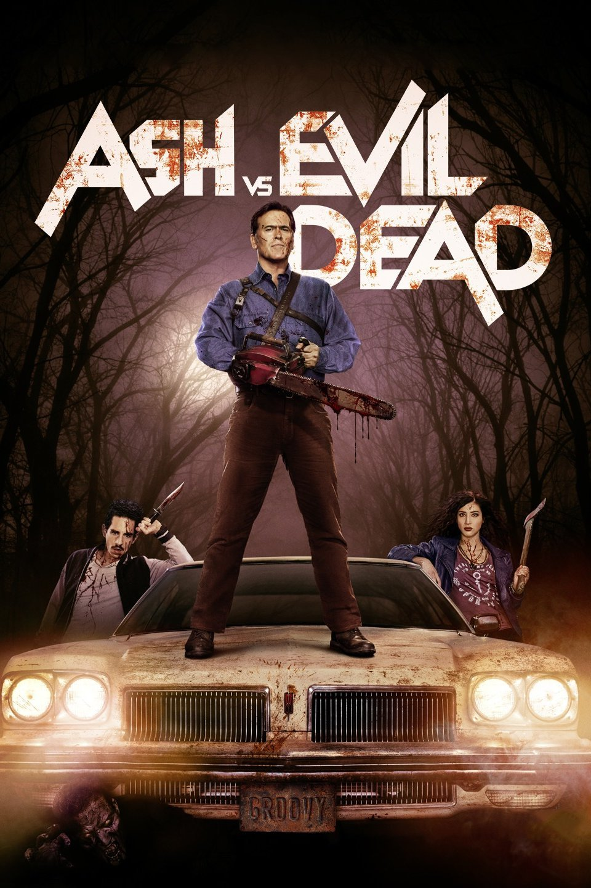

Ash vs Evil Dead (Aired 2015-)
Rating: 8.9/10
Age Restriction: TV-MA
Ash has spent the last 30 years avoiding responsibility, maturity and the terrors of the Evil Dead until a Deadite plague threatens to destroy all of mankind and Ash becomes mankind's only hope.
Creators: Ivan Raimi, Sam Raimi, Tom Spezialy
Cast
Bruce Campbell as .... Ashley 'Ash' J. Williams
Ray Santiago as .... Pablo Simon Bolivar
Dana DeLorenzo as .... Kelly Maxwell
Jill Marie Jones as .... Amanda Fisher
Lucy Lawless as .... Ruby Knowby
Samara Weaving as .... Heather
Ben Fransham as .... Eligos